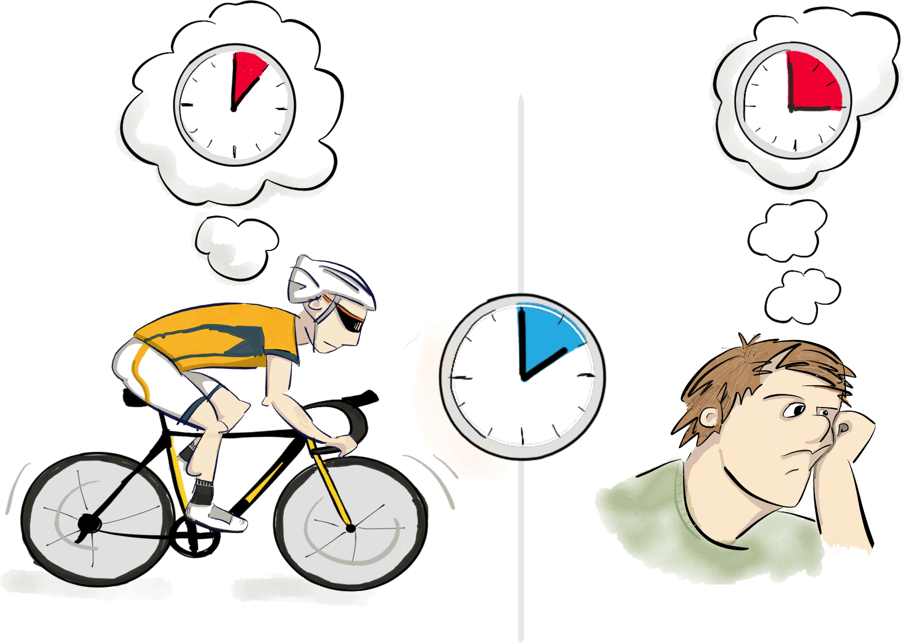

Constraints
Time Perception
Overview
This week I decided to shift away from my old augmentation projects to have a project which is narrower in scope and better meets the class requirements, such as having lights, having something physical, etc. I am still 'augmenting' in a way, but it's different from just digital augmentation using Hololens, which I have been focuing on in the past few weeks.
Concept
I decided to tackle the problem of time perception in my project. Time is mostly defined as a duration/interval of one type or another. While clocks show us objective time, our subjective or perceived time is the perceived interval between two events. Research shows that our subjective time is different from our objective time [Fraisse 1984; Joubert, 1984; Zakay, 1990; Gibbon 1986].
“Put your hand on a hot stove for a minute, and it seems like an hour. Sit with a pretty girl for an hour, and it seems like a minute. That’s relativity.”
Goal
Time perception is complex as it is dependent on the different ways in which our brain experiences the world around it (Van Wassenhove, 2008). My goal in this project is not to find the most accurate way of measuring one’s time perception, but to use the different pieces that are known to influence time perception to meangingfully depict user's distorted perception of time
- 
Design Baseline
Normal Clock
It would ‘look’ as close to a normal clock as possible so that people may be aware of their subjective time as they look at the clock’s objective time. Most people are familiar with the concept of objective time on clocks, and clocks are an already used products in people’s homes/offices. This way, I am augmenting an already acceptable and used product.
Strobe light
I would add an extra hand to the clock and the speed of this extra hand would represent our subjective time. As time slows down for a person, the extra hand would go in slow motion, and vice versa. I decided to use strobe light effect here as using strobe effect, I can change the perception of an object, which is moving at constant rate. Using strobe lights, I can show the hand as completely frozen or moving in slow motion (forward and backward) or quickly jumping between positions (again, forward and backward).
Status light
People can perceive time as slowed down for different reasons, e.g. when they are afraid or sad or relaxed, etc. Similarly, time may speed up when we are happy or focused. To disambiguate the different states during which time slows down or speeds up, I decided to use colors to guide the users. For example, when a user is sad, the extra hand would slow down, but the clock would be purple colored. Whereas when the user is afraid, the extra hand would still slow down, but the clock would be blue colored.
Related Work

Citations
Fraisse, Paul. "Perception and estimation of time." Annual review of psychology 35.1 (1984): 1-37.
Joubert, C. E. (1984). Structured time and subjective acceleration of time. Perceptual and Motor Skills, 59, 335-336.
Zakay, D. (1990). The evasive art of subjective time measurement: Some methodological dilemmas. In R. A. Block (Ed.), Cognitive models of psychological time, (pp. 59-84). Hillsdale, NJ: Erlbaum.
Gibbon, John. "The structure of subjective time: How time flies." Psychology of Learning and Motivation 20 (1986): 105-135.
Van Wassenhove, Virginie, et al. "Distortions of subjective time perception within and across senses." PloS one 3.1 (2008): e1437.